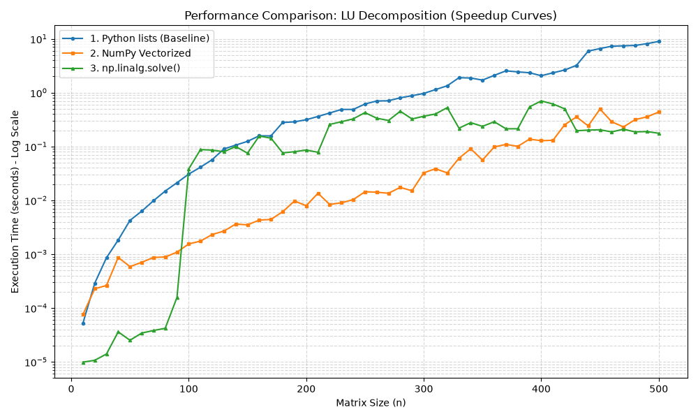
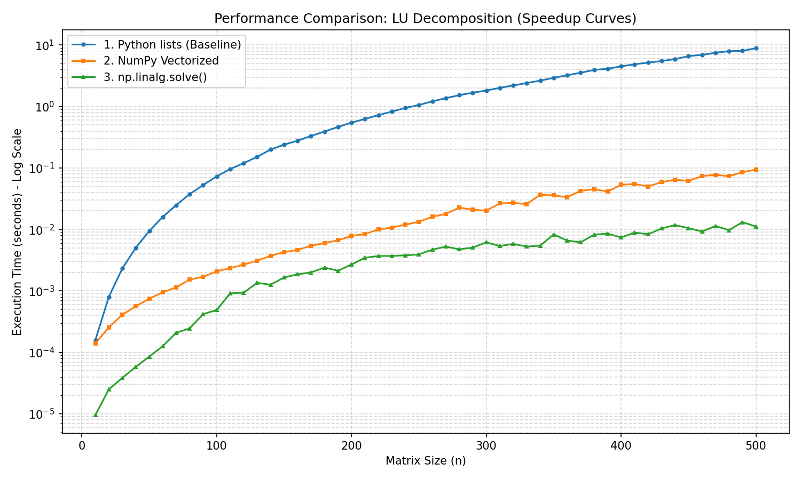
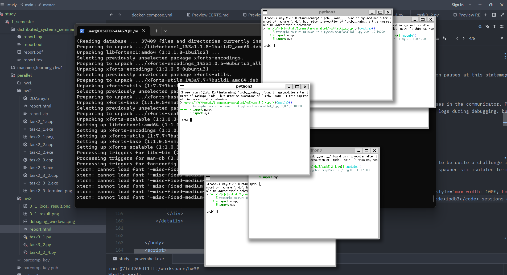

Setup & Vectorization Strategy:
The objective was to replace the slow, interpreter-bound nested Python loops of a standard LU decomposition algorithm with highly optimized NumPy array operations. The primary vectorization improvement occurs during the submatrix update. Instead of manually iterating through rows and columns to compute a[i][j] = a[i][j] - a[i][k] * a[k][j], I replaced the two inner loops with a single vectorized outer product assignment: a[k+1:, k+1:] -= np.outer(a[k+1:, k], a[k, k+1:]). This pushes the heavy arithmetic down to NumPy's underlying C backend.
Performance Anomaly (Local vs. Remote Execution):
During the initial benchmarking on my local environment, the execution times-especially for the highly optimized np.linalg.solve() - exhibited severe variance and inexplicable spikes[cite: 1]. This jitter is typical when running micro-benchmarks on a consumer OS, where the CPU scheduler dynamically scales frequencies or interrupts the thread for background tasks, polluting the median timings of sub-millisecond operations. To get clean, asymptotic scaling data, I re-ran the exact same benchmark on a remote machine with a more stable execution environment[cite: 2].

Figure: Local execution showing severe scheduler interference and unstable benchmarking times[cite: 1].

Figure: Remote execution revealing smooth logarithmic scaling of $O(n^3)$ complexity[cite: 2].
Scaling Analysis (Based on Remote Execution):
np.linalg.solve() delegates the math directly to heavily optimized BLAS/LAPACK Fortran libraries, which utilize CPU-specific SIMD instructions and superior cache-blocking algorithms that a simple outer-product approach cannot match.nechshadimov@parcomp2026:~/sources/hw3$ mpiexec -n 4 python3 task3_2.py
Hello from rank 2 of 4
Hello from rank 3 of 4
Hello from rank 0 of 4
Hello from rank 1 of 4
nechshadimov@parcomp2026:~/sources/hw3$ mpiexec -n 10 python3 task3_2.py
Hello from rank 3 of 10
Hello from rank 6 of 10
Hello from rank 1 of 10
Hello from rank 4 of 10
Hello from rank 7 of 10
Hello from rank 9 of 10
Hello from rank 8 of 10
Hello from rank 0 of 10
Hello from rank 2 of 10
Hello from rank 5 of 10print statement, the order in which the output reaches the terminal depends entirely on the operating system's process scheduler, individual process startup times, and I/O buffering. It is essentially a race condition to stdout.
Implementation of return_3rd:
The function uses standard lower-case comm.send() and comm.recv() which automatically pickle and unpickle generic Python objects. It handles the distinct roles of the source, dest, and all other idle processes strictly based on their MPI rank.
Raw Terminal Output:
nechshadimov@parcomp2026:~/sources/hw3$ mpiexec -n 3 python3 task3_2_1.py
[Rank 1] Dest received full list: [0.1, 'Yes', 'Kolmas', 0.001]
[Rank 2] Other process returned: None
[Rank 0] Source received correct 3rd item: Kolmasmpiexec -n 3 python3 task3_2_1.py. The assertions numpy.testing.assert_equal() passed silently without throwing any AssertionError.'Kolmas' upon the return trip. Rank 1 (dest) successfully intercepted the message, accessed the item at index 2, shipped it back over the network, and returned the unmodified list. Rank 2 correctly ignored the exchange and returned None.Implementation of return_3rd_nonblocking:
The blocking calls were replaced with non-blocking comm.isend() and comm.irecv(). These methods return a Request object immediately, allowing the process to continue its execution independently. To safely finalize the data transfer and avoid race conditions, explicit request.wait() calls are made. Diagnostic print statements were injected right before each wait operation to trace the asynchronous execution flow.
Raw Terminal Output:
nechshadimov@parcomp2026:~/sources/hw3$ mpiexec -n 3 python3 task3_2_2.py
process 0 starting first wait
process 0 starting second wait
process 1 starting first wait
process 1 starting second wait
[Rank 2] Other process returned: None
[Rank 0] Source received correct 3rd item: Kolmas
[Rank 1] Dest received full list: [0.1, 'Yes', 'Kolmas', 0.001]numpy.testing.assert_equal() assertions passed silently without throwing any errors, confirming data integrity..wait() barriers, ensuring Rank 0 correctly extracts the string 'Kolmas' and Rank 1 safely retrieves the full list. Rank 2 correctly remained idle and returned None.Implementation Strategy & Memory Layout:
To avoid the overhead of Python object pickling, communication was handled using the capitalized MPI methods (comm.Send() and comm.Recv()). These methods bypass the interpreter and transmit raw, contiguous C-level memory buffers directly across the network, which is drastically faster for large numerical matrices. To handle dynamic array sizes safely, a lightweight lowercase comm.send() is used first to transmit the shape tuple, allowing the receiving process to pre-allocate an empty NumPy buffer before triggering the heavy comm.Recv().
Handling Strided Data (The .copy() requirement):
When the destination process extracts every third element via slicing (data[::3]), NumPy creates a "view" of the original array with memory gaps (non-contiguous stride). Passing this view directly to comm.Send() raises an exception because MPI expects a continuous block of bytes. To solve this, the slice was chained with a .copy() operation, forcing NumPy to allocate a fresh, tightly packed array in memory before sending it back to the source.
Raw Terminal Output:
nechshadimov@parcomp2026:~/sources/hw3$ mpiexec -n 3 python3 task3_2_3.py
[Rank 0] Verification passed! arr[3] == returned_arr[1] == 0.5987
[Rank 1] Dest successfully received full array of length 5
[Rank 2] Other process correctly returned: Nonenumpy.testing.assert_equal() assertions passed silently without throwing any errors.[::3] view into contiguous memory using .copy(), and shipped it back. Rank 0 successfully verified that the element at index 3 of the original array perfectly matched index 1 of the returned sub-array. Rank 2 correctly ignored the transaction and returned None.The Barrier Command:
In mpi4py, synchronization is handled via comm.Barrier(). Execution pauses at this statement until all processes in the communicator reach this exact point.
Rules on Using Barriers:
if rank == 0:) results in an immediate deadlock.Debugging Session Overview & Environment Notes:
Getting graphical windows to pop up smoothly from a Linux environment on Windows turned out to be quite a challenge involving WSL and X11 forwarding configurations. Ultimately, utilizing WSLg made it possible to spawn multiple interactive debuggers seamlessly.
Running the command mpirun -n 6 xterm -e ipdb3 trapParallel_1.py 0.0 1.0 10000 spawned six isolated terminal windows simultaneously. Setting a breakpoint right before the communication block (b 51) allowed step-by-step inspection of point-to-point communication where Rank 0 acts as a blocking listener (comm.Recv()) while the remaining ranks transmit their local integration results.

Figure: Simultaneous ipdb3 sessions across 6 parallel processes tracking communication steps at program lines 54 and 58.